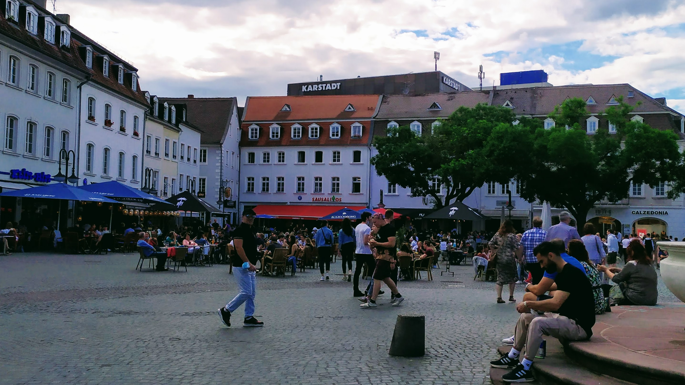

Relaxed restrictions in Saarbrücken
Back to kind of normal!
Starting this Saturday (May 22), restaurants, pubs, bars and cafés will return to business in Saarbrücken. Up to 10 people are allowed to gather outdoors. This number is set to 5 for any in-house gathering. 1
Anyway, the point is – to book a table for a weekend lunch or an evening drink in a pub, you need to get a rapid antigen test report. If the test result is negative, you are a free bird for 24 hours!
Here you can find more details and book an online appointment for the test.
Enjoy your social life responsibly üòè‚Ķuntil the number of cases reaches the threshold of danger leading back to restrictions.
See you somewhere in Tante Anna or Wallys Pub — my favorites.

Or perhaps on a walk by the river üòå (üéµand make me completeüéµ)
Footnotes
Check the websites of Robert Koch Institute and Saarland state government for official information, rules and regulations. The information in this page are taken from the news sources –
[1]and[2].↩︎